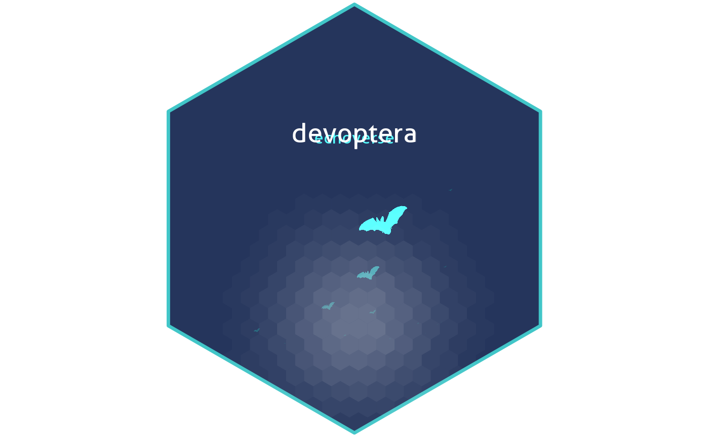

echoverse hex stickers
Authors: Brian Schilder, Jack Humphrey, Towfique Raj
Authors: Brian Schilder, Jack Humphrey, Towfique Raj
Vignette updated: Aug-17-2023
Source: Vignette updated: Aug-17-2023
vignettes/make_hex.Rmd
make_hex.RmdMake hex
devoptera::make_hex is a helper function that generates
an echoverse-themed hex sticker using a built-in
template.
## Loading required namespace: hexSticker## Loading required namespace: R.utils
Show hex
By default, it saves the sticker at inst/hex/hex.png. Once it’s been created, you can push it to the package’s GitHub repository.
This will then be detected automatically by
rworkflows::use_badges() when the argument
use_hex=TRUE.
rworkflows::use_badges(ref = "RajLabMSSM/devoptera",
add_hex = TRUE)## Finding hex sticker(s) for 1 package(s).## Adding license.## Adding version.## Adding code size## Adding commit.## Adding actions.## Adding codecov.## Adding authors.


Authors: Brian Schilder, Jack Humphrey, Towfique Raj
[1] “(https://img.shields.io/badge/license-GPL--3-blue.svg)](https://cran.r-project.org/web/licenses/GPL-3)\n
{kind=link}
(https://github.com/RajLabMSSM/devoptera/workflows/rworkflows/badge.svg)](https://github.com/RajLabMSSM/devoptera/actions)\n
{kind=link} Authors:
Brian Schilder, Jack Humphrey, Towfique Raj
Authors:
Brian Schilder, Jack Humphrey, Towfique Raj
”
Further customisation
For more customised hex stickers, you can make awesome hex stickers for your R packages using:
-
hexSticker
-
ggimage lets
you render images as data points.
- ggpattern lets you fill objects with patterns or images.
- magick modify PNGs.
Session Info
devoptera::session_info()## ─ Session info ───────────────────────────────────────────────────────────────
## setting value
## version R version 4.3.1 (2023-06-16)
## os Ubuntu 22.04.2 LTS
## system x86_64, linux-gnu
## ui X11
## language en
## collate en_US.UTF-8
## ctype en_US.UTF-8
## tz UTC
## date 2023-08-17
## pandoc 3.1.1 @ /usr/local/bin/ (via rmarkdown)
##
## ─ Packages ───────────────────────────────────────────────────────────────────
## package * version date (UTC) lib source
## badger 0.2.3 2023-01-28 [1] CRAN (R 4.3.1)
## Biobase 2.61.0 2023-04-25 [1] Bioconductor
## BiocCheck 1.37.8 2023-08-14 [1] Bioconductor
## BiocFileCache 2.9.1 2023-07-12 [1] Bioconductor
## BiocGenerics 0.47.0 2023-04-25 [1] Bioconductor
## BiocManager 1.30.22 2023-08-08 [2] CRAN (R 4.3.1)
## BiocPkgTools 1.19.5 2023-08-14 [1] Bioconductor
## BiocStyle * 2.29.1 2023-07-19 [1] Bioconductor
## biocViews 1.69.1 2023-05-10 [1] Bioconductor
## bit 4.0.5 2022-11-15 [1] CRAN (R 4.3.1)
## bit64 4.0.5 2020-08-30 [1] CRAN (R 4.3.1)
## bitops 1.0-7 2021-04-24 [1] CRAN (R 4.3.1)
## blob 1.2.4 2023-03-17 [1] CRAN (R 4.3.1)
## bookdown 0.35 2023-08-09 [1] CRAN (R 4.3.1)
## bslib 0.5.1 2023-08-11 [2] CRAN (R 4.3.1)
## cachem 1.0.8 2023-05-01 [2] CRAN (R 4.3.1)
## callr 3.7.3 2022-11-02 [2] CRAN (R 4.3.1)
## cli 3.6.1 2023-03-23 [2] CRAN (R 4.3.1)
## codetools 0.2-19 2023-02-01 [3] CRAN (R 4.3.1)
## colorspace 2.1-0 2023-01-23 [1] CRAN (R 4.3.1)
## crayon 1.5.2 2022-09-29 [2] CRAN (R 4.3.1)
## crul 1.4.0 2023-05-17 [1] CRAN (R 4.3.1)
## curl 5.0.2 2023-08-14 [1] CRAN (R 4.3.1)
## data.table 1.14.8 2023-02-17 [1] CRAN (R 4.3.1)
## DBI 1.1.3 2022-06-18 [1] CRAN (R 4.3.1)
## dbplyr 2.3.3 2023-07-07 [1] CRAN (R 4.3.1)
## desc 1.4.2 2022-09-08 [2] CRAN (R 4.3.1)
## devoptera * 0.99.0 2023-08-17 [1] Bioconductor
## devtools 2.4.5 2022-10-11 [2] CRAN (R 4.3.1)
## digest 0.6.33 2023-07-07 [2] CRAN (R 4.3.1)
## dlstats 0.1.7 2023-05-24 [1] CRAN (R 4.3.1)
## dplyr 1.1.2 2023-04-20 [1] CRAN (R 4.3.1)
## DT 0.28 2023-05-18 [1] CRAN (R 4.3.1)
## ellipsis 0.3.2 2021-04-29 [2] CRAN (R 4.3.1)
## evaluate 0.21 2023-05-05 [2] CRAN (R 4.3.1)
## fansi 1.0.4 2023-01-22 [2] CRAN (R 4.3.1)
## farver 2.1.1 2022-07-06 [1] CRAN (R 4.3.1)
## fastmap 1.1.1 2023-02-24 [2] CRAN (R 4.3.1)
## fauxpas 0.5.2 2023-05-03 [1] CRAN (R 4.3.1)
## filelock 1.0.2 2018-10-05 [1] CRAN (R 4.3.1)
## fs 1.6.3 2023-07-20 [2] CRAN (R 4.3.1)
## generics 0.1.3 2022-07-05 [1] CRAN (R 4.3.1)
## ggfun 0.1.2 2023-08-09 [1] CRAN (R 4.3.1)
## ggimage 0.3.3 2023-06-19 [1] CRAN (R 4.3.1)
## ggplot2 3.4.3 2023-08-14 [1] CRAN (R 4.3.1)
## ggplotify 0.1.2 2023-08-09 [1] CRAN (R 4.3.1)
## gh 1.4.0 2023-02-22 [2] CRAN (R 4.3.1)
## glue 1.6.2 2022-02-24 [2] CRAN (R 4.3.1)
## graph 1.79.0 2023-04-25 [1] Bioconductor
## gridGraphics 0.5-1 2020-12-13 [1] CRAN (R 4.3.1)
## gtable 0.3.3 2023-03-21 [1] CRAN (R 4.3.1)
## here 1.0.1 2020-12-13 [1] CRAN (R 4.3.1)
## hexbin 1.28.3 2023-03-21 [1] CRAN (R 4.3.1)
## hexSticker 0.4.9 2020-12-05 [1] CRAN (R 4.3.1)
## highr 0.10 2022-12-22 [2] CRAN (R 4.3.1)
## hms 1.1.3 2023-03-21 [1] CRAN (R 4.3.1)
## htmltools 0.5.6 2023-08-10 [2] CRAN (R 4.3.1)
## htmlwidgets 1.6.2 2023-03-17 [2] CRAN (R 4.3.1)
## httpcode 0.3.0 2020-04-10 [1] CRAN (R 4.3.1)
## httpuv 1.6.11 2023-05-11 [2] CRAN (R 4.3.1)
## httr 1.4.7 2023-08-15 [1] CRAN (R 4.3.1)
## igraph 1.5.1 2023-08-10 [1] CRAN (R 4.3.1)
## jquerylib 0.1.4 2021-04-26 [2] CRAN (R 4.3.1)
## jsonlite 1.8.7 2023-06-29 [2] CRAN (R 4.3.1)
## knitr 1.43 2023-05-25 [2] CRAN (R 4.3.1)
## labeling 0.4.2 2020-10-20 [1] CRAN (R 4.3.1)
## later 1.3.1 2023-05-02 [2] CRAN (R 4.3.1)
## lattice 0.21-8 2023-04-05 [3] CRAN (R 4.3.1)
## lifecycle 1.0.3 2022-10-07 [2] CRAN (R 4.3.1)
## magick 2.7.5 2023-08-07 [1] CRAN (R 4.3.1)
## magrittr 2.0.3 2022-03-30 [2] CRAN (R 4.3.1)
## memoise 2.0.1 2021-11-26 [2] CRAN (R 4.3.1)
## mime 0.12 2021-09-28 [2] CRAN (R 4.3.1)
## miniUI 0.1.1.1 2018-05-18 [2] CRAN (R 4.3.1)
## munsell 0.5.0 2018-06-12 [1] CRAN (R 4.3.1)
## pillar 1.9.0 2023-03-22 [2] CRAN (R 4.3.1)
## pkgbuild 1.4.2 2023-06-26 [2] CRAN (R 4.3.1)
## pkgconfig 2.0.3 2019-09-22 [2] CRAN (R 4.3.1)
## pkgdown 2.0.7 2022-12-14 [1] CRAN (R 4.3.1)
## pkgload 1.3.2.1 2023-07-08 [2] CRAN (R 4.3.1)
## prettyunits 1.1.1 2020-01-24 [2] CRAN (R 4.3.1)
## processx 3.8.2 2023-06-30 [2] CRAN (R 4.3.1)
## profvis 0.3.8 2023-05-02 [2] CRAN (R 4.3.1)
## promises 1.2.1 2023-08-10 [2] CRAN (R 4.3.1)
## ps 1.7.5 2023-04-18 [2] CRAN (R 4.3.1)
## purrr 1.0.2 2023-08-10 [2] CRAN (R 4.3.1)
## R.methodsS3 1.8.2 2022-06-13 [1] CRAN (R 4.3.1)
## R.oo 1.25.0 2022-06-12 [1] CRAN (R 4.3.1)
## R.utils 2.12.2 2022-11-11 [1] CRAN (R 4.3.1)
## R6 2.5.1 2021-08-19 [2] CRAN (R 4.3.1)
## ragg 1.2.5 2023-01-12 [2] CRAN (R 4.3.1)
## RBGL 1.77.1 2023-05-15 [1] Bioconductor
## RColorBrewer 1.1-3 2022-04-03 [1] CRAN (R 4.3.1)
## Rcpp 1.0.11 2023-07-06 [2] CRAN (R 4.3.1)
## RCurl 1.98-1.12 2023-03-27 [1] CRAN (R 4.3.1)
## readr 2.1.4 2023-02-10 [1] CRAN (R 4.3.1)
## remotes 2.4.2.9000 2023-08-17 [1] Github (r-lib/remotes@8875171)
## renv 1.0.2 2023-08-15 [1] CRAN (R 4.3.1)
## rlang 1.1.1 2023-04-28 [2] CRAN (R 4.3.1)
## rmarkdown 2.24 2023-08-14 [1] CRAN (R 4.3.1)
## rorcid 0.7.0 2021-01-20 [1] CRAN (R 4.3.1)
## rprojroot 2.0.3 2022-04-02 [2] CRAN (R 4.3.1)
## RSQLite 2.3.1 2023-04-03 [1] CRAN (R 4.3.1)
## rstudioapi 0.15.0 2023-07-07 [2] CRAN (R 4.3.1)
## RUnit 0.4.32 2018-05-18 [1] CRAN (R 4.3.1)
## rvcheck 0.2.1 2021-10-22 [1] CRAN (R 4.3.1)
## rvest 1.0.3 2022-08-19 [1] CRAN (R 4.3.1)
## rworkflows 0.99.11 2023-08-17 [1] Github (neurogenomics/rworkflows@76c9fb0)
## sass 0.4.7 2023-07-15 [2] CRAN (R 4.3.1)
## scales 1.2.1 2022-08-20 [1] CRAN (R 4.3.1)
## sessioninfo 1.2.2 2021-12-06 [2] CRAN (R 4.3.1)
## shiny 1.7.5 2023-08-12 [1] CRAN (R 4.3.1)
## showtext 0.9-6 2023-05-03 [1] CRAN (R 4.3.1)
## showtextdb 3.0 2020-06-04 [1] CRAN (R 4.3.1)
## stringdist 0.9.10 2022-11-07 [1] CRAN (R 4.3.1)
## stringi 1.7.12 2023-01-11 [2] CRAN (R 4.3.1)
## stringr 1.5.0 2022-12-02 [2] CRAN (R 4.3.1)
## sysfonts 0.8.8 2022-03-13 [1] CRAN (R 4.3.1)
## systemfonts 1.0.4 2022-02-11 [2] CRAN (R 4.3.1)
## textshaping 0.3.6 2021-10-13 [2] CRAN (R 4.3.1)
## tibble 3.2.1 2023-03-20 [2] CRAN (R 4.3.1)
## tidyselect 1.2.0 2022-10-10 [1] CRAN (R 4.3.1)
## tzdb 0.4.0 2023-05-12 [1] CRAN (R 4.3.1)
## urlchecker 1.0.1 2021-11-30 [2] CRAN (R 4.3.1)
## usethis 2.2.2 2023-07-06 [2] CRAN (R 4.3.1)
## utf8 1.2.3 2023-01-31 [2] CRAN (R 4.3.1)
## vctrs 0.6.3 2023-06-14 [2] CRAN (R 4.3.1)
## whisker 0.4.1 2022-12-05 [2] CRAN (R 4.3.1)
## withr 2.5.0 2022-03-03 [2] CRAN (R 4.3.1)
## xfun 0.40 2023-08-09 [2] CRAN (R 4.3.1)
## XML 3.99-0.14 2023-03-19 [1] CRAN (R 4.3.1)
## xml2 1.3.5 2023-07-06 [2] CRAN (R 4.3.1)
## xtable 1.8-4 2019-04-21 [2] CRAN (R 4.3.1)
## yaml 2.3.7 2023-01-23 [2] CRAN (R 4.3.1)
## yulab.utils 0.0.7 2023-08-09 [1] CRAN (R 4.3.1)
##
## [1] /__w/_temp/Library
## [2] /usr/local/lib/R/site-library
## [3] /usr/local/lib/R/library
##
## ──────────────────────────────────────────────────────────────────────────────